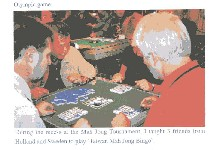

台湾16枚麻雀の入門書。
台湾16枚麻雀の本は、これまでも何冊もあった。しかしいずれも装丁が粗末で、内容も通りいっぺん。しかしこの本は装丁もしっかりしており、遊び方もカラー写真で図解されている。なにより珍しいのが、英文だということ。英文の台湾16枚麻雀入門書は、これが最初と思われる。
写真の例は単牌式壁牌。それぞれの配牌の手前においてある物差しみたいなものは、プラスチック製のサッシ。起家だけ色違いのものを使う（写真の場合は黄色が起家、青色が散家（子））。親が移動してもサッシを交換しない。それによって起家がだれだったか、すぐ分かる。このサッシは、手牌を扱うときに使用する。配牌をもらったとき、手牌はピッシリ一列になっていない。日本では手牌を両手で持って、麻雀卓のヘリに軽く打ち当てて揃える。手牌をオープンするときにも、両手で手牌の端を持ってオープンする。
しかし台湾の麻雀卓にはヘリがない。また左手は山積みのときしか使わない。そこで手牌をそろえるときは、このサッシを上手に使う。手牌オープンも、このサッシで行う。年期の入った人は、実に上手に使う。σ(-_-)クラスでは、持てあましてモタモタ。かえってジャマくさい....(_
_；
＃
著者は、張襄玉（チャンシャンユー）という人。なんでも先祖は前漢の皇帝・劉邦の大参謀・張良（字(あざな)は子房(しぼう））だという。その子孫のうちの１人が250年前に大陸から台湾に渡来したのだとか。そこで張さんも、自分の字(あざな)を子房としている。
自分が愛好する台湾16枚麻雀を、世界に広めたいという一心でこの本を執筆したという。この本のサブタイトルにGreen Bookとある。表紙が緑色だからということであるが、これはJ．P．BABCOOKのRed Bookを踏まえている。いうまでもなくRed Bookは、麻雀がアメリカでブームとなった1920年代、その嚆矢となった本。Green Bookというネーミングに、台湾16枚麻雀に対する張さんの想いがこめられているようだ。
大正13年７月に、林茂光(りんもこう)が日本で最初に出版した入門書がベストセラーとなった。これも表紙が赤かったので、やはり赤本と呼ばれた。
Red Book 赤本 赤本
Green Bookは全体の８割が台湾16枚麻雀の記述であるが、最後の方に麻雀牌を利用したビンゴの遊び方をくわしく解説してある(チラっと、麻雀バカラの遊び方も)。なんでビンゴかと思うが、どうやら張さん、ビンゴが大好きなよう。自分がビンゴをしている写真まで載せている。

張さんは、日本で行われた中国麻将大会にも参加している。そこで本の最後の方には、中国公式麻将の遊び方（アガリ役の解説だけ）も紹介してある。
本についてはそれくらいであるが、この張さん、麻雀牌や書籍の関係のコレクターでもある。そこで集めた資料を基に、麻雀博物館の台湾版を計画しているという。すでに用地も取得済みで、来年には建設に取りかかるとか。いや、素晴らしい。完成すれば、日本・中国・台湾と、世界に３カ所の博物館ができることになる。
|